找规律画图的训练，可以培养孩子观察图形、总结规律的能力。
5～7岁的孩子要能够按照数量、位置、形状、颜色等规律对图形进行排序，既要掌握规律排序，还要掌握递增、递减等其他形式的排序。这类题需要孩子善于发现图中的变化规律，孩子通过观察分析，才能正确地画出后面的图形。
图形一般在数量、位置、形状和颜色上按照一定的规律排序，孩子在解决此类题目的时候，主要看图形的数量、位置、形状、颜色是按照什么样的规律变化的，是周期性变化，还是递减、递增变化等。
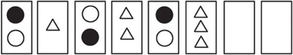
典型例题 1 请画出装在盒子里的3颗珠子。
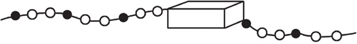
通过观察发现，珠子是按照1颗黑珠子、2颗白珠子的顺序规律排序的，所以盒子中是1颗黑珠子、2颗白珠子。
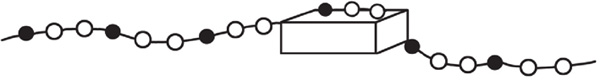
典型例题 2 请在横线上画出相应的图形。
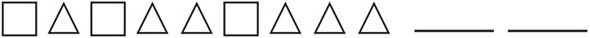
通过观察发现，一共有2种图形，分别是□和△，2种图形交替排列，□的个数不变，每次都是1个，△每次的个数都增加1。
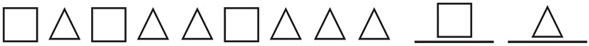
典型例题 3 请在最后一个正方形里接着画出图形。
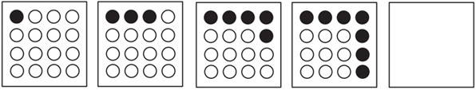
通过观察发现，每个正方形里都有16个圆，第1幅图有1个实心圆，第2幅图有3个实心圆，第3幅图有5个实心圆，第4幅图有7个实心圆，后面一幅图中的实心圆都比前面一幅图的多2个，所以第5幅图应该有9个实心圆。观察前4幅图可知，实心圆是按照顺时针方向增加的。
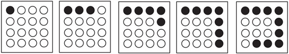
典型例题 4 请在最后一个正方形里画出图形。
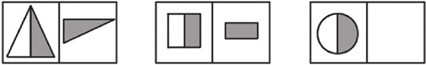
通过观察发现：第1组图形的第1个图形是三角形被等分，一半空心一半实心，第2个图形是实心的半个三角形顺时针旋转90°；第2组图形的第1个图形是正方形被等分，一半空心一半实心，第2个图形是实心的半个正方形顺时针旋转90°。第3组图形的第1个图形是圆形被等分，一半空心一半实心，则第2个图形应该是实心的半个圆形按顺时针旋转90°。
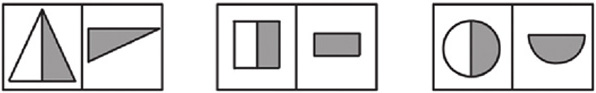
典型例题 5 请把最后一个大正方形中的4个图形画全。
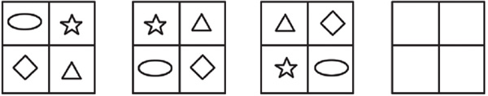
通过观察发现，每个大正方形中都有4个图形，这4个图形除了位置不一样，其他都是一样的，每个图形在正方形中的位置都是沿逆时针旋转变化的。根据前面3幅图，可以推断，第4幅图中的三角形位于左下角，椭圆位于右上角，菱形位于左上角，五角星位于右下角。
1.请画出接下来的6颗珠子。
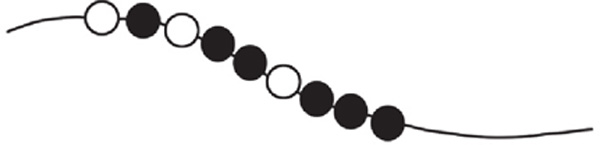
2.请说出被大树挡住的彩旗的颜色。
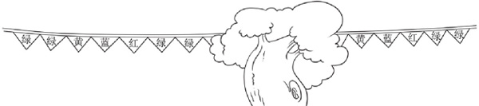
3.请在横线上画出相应的图形。
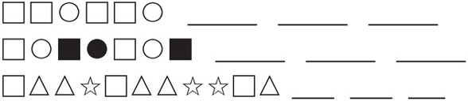
4.请画出最后一个长方形中的点。
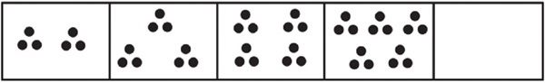
5.请画出最后2个长方形中的图形。
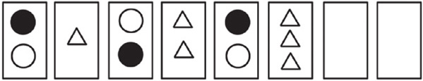
6.请把空白图形补全。
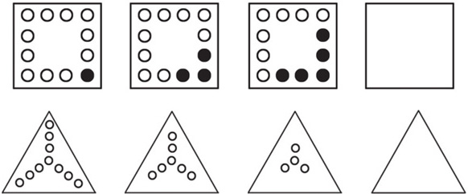
7.请把空白图形补全。
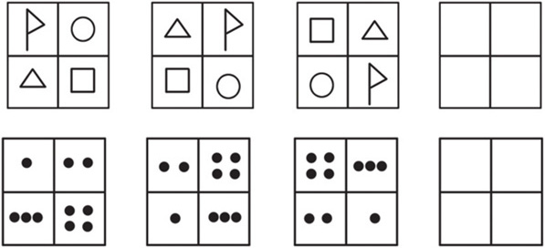
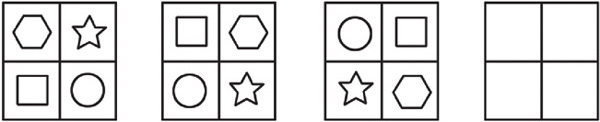
8.请把空白图形补全。
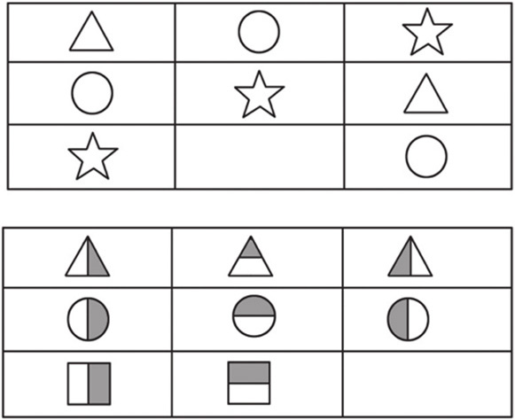